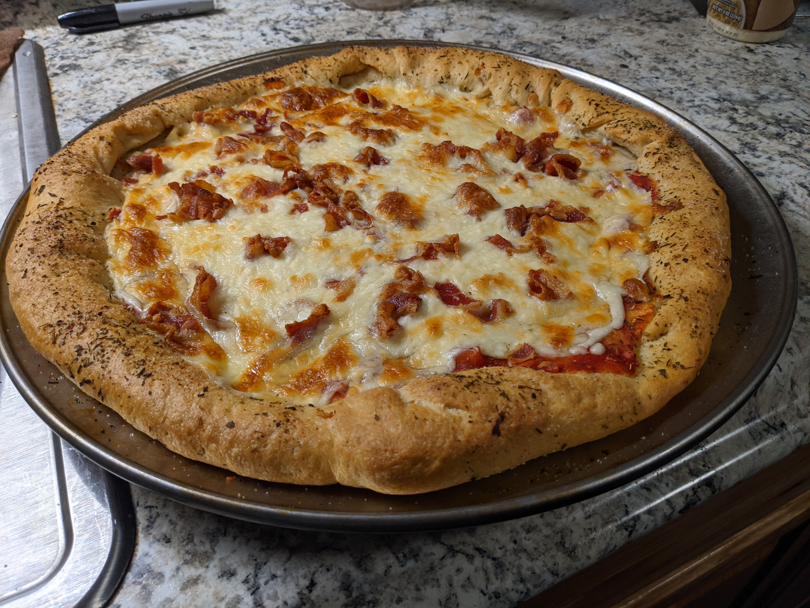

Bacon Pizza

Description
I live 45 mins from the nearest McDonalds and my only options for local food include your usual sandwich artists and a assortment of bar pizza. My appetite for pizza combined with my inner-cheap-ass lead me to this recipe. The crust is great as a garlic bread or could even be used as a roll if your creative. It all started for me with this pizza crust.
Ingredients
- 1 Tablespoon dry yeast
- 3 Tablespoons sugar
- 1 Cup warm water
- 2 1/2 Cups flour
- 3 Tablespoons oil
- 1 Teaspoon salt
- Cooked bacon crumbled
- Cheese
- Crushed tomato can
Steps
- Put dry ingredients in stand mixer.
- Add yeast to water with sugar mix to combine let rest in bowl until foam develops.
- Add yeast water mixture to dry ingredients, start to mix slowly adding oil one spoon at a time.
- You may need to add more flour or water to get the dough to come to a ball depending on your time of year and local temperatures.
- Once ball forms let it kneed in machine for 5 minutes. Once that is done place dough ball in oiled bowl and cover with plastic wrap. Let rise until doubled in size.
- Pull dough from bowl place on oiled pan stretch to shape desired.
- Let dough rise on pan while oven preheats to 450f. Once oven is at temp give dough one last stretch and place in oven to par bake for 5 mins.
- Add sauce, cheese and bacon and return to oven for 5-15 minutes until bottom crust is brown and cheese is golden. Enjoy!